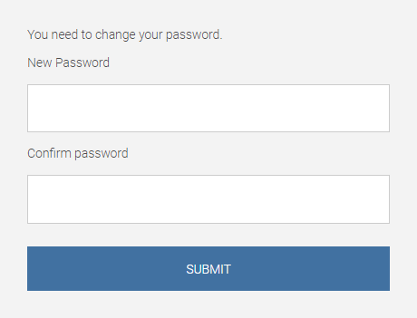
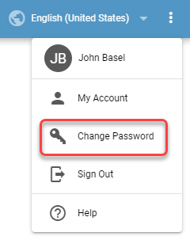

Logging In¶
Every new application user is assigned a user name and a password. Password assigned to a user may be permanent or temporary. Once the user logs in for the first time using the temporary password, a real password must be created that is used for all subsequent logins.
Figure 1: User name and password screen
Figure 2: Creating a new password
Resetting password
In case of a forgotten password, user can create a new one by following these steps:
Click on the Forgot Password button.
Figure 3: Forgotten password
Provide an username used for loging in to the DW application and click on Submit.
Figure 4: Username
Email with a password reset link will be sent to an email address associated with the username.
Figure 5: Email address
In the recieved email, click on Reset Password button or copy the link into your browser.
Figure 6: Reset password button
Fill the new password twice for a confirmation. Click Submit to set a new password and log into the DW application.
Figure 7: New password

Changing password
After logging in, user can change his password by following these steps:
Password change will terminate all open wallboard sessions in the browser. Make sure to save all changes before changing password.
Click Change Password option in the application menu.
Figure 8: Change a password
Provide an old password and fill the new password twice for a confirmation. Click Save to set a new password.
Figure 9: Password confirmation
Your password has been updated.
Figure 10: Password update.